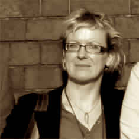

Revisiting DaliehA CALL FOR ALTERNATIVE VISIONS ALONG BEIRUT’S COAST
In an effort to prevent the transformation of Dalieh – the last of the natural headlands overlooking Beirut’s emblematic Sakhret el-Raouche (Pigeon’s Rock)–to another private beach resort, the “Civil Campaign to Protect the Dalieh of Raouche” is launching this Ideas Competition to solicit visions for safeguarding Dalieh as a unique natural site and a shared open space.
The Competition is an open call for architects, landscape architects, urbanists, planners, and other related environmental design disciplines. Participants are invited to articulate creative, sensitive, and environmentally sustainable design proposals for the conservation and future development of Dalieh.
Competitors’ entries will provide a platform to open a public debate about open-access shared spaces and how these spaces can be designed, managed and sustained in ways that provide viable design alternatives to current practices along the coast of Lebanon. We urge multidisciplinary professionals and/or students, particularly those concerned with the public realm and the preservation of the natural environment, to participate in the competition. Competitors’ visions are anticipated to broaden the collective understanding of the meaning of place within a highly individualized market-driven urban geography in Lebanon.
The Competition is organized under the patronage of the Ministry of Environment. Other key supporters are: The Asfari Institute for Civil Society and Citizenship and the Nature Conservation Center at the American University of Beirut (AUB).
Information packets
You can download here the competition brief containing all pertinent information on the competition as well as various appendices.
- Competition Brief
- Appendix 1 - Landscape Characteristics (4 MB)
- Appendix 2 - Existing Legal Framework (1.1 MB)
- Appendix 3 - About Beirut and Public Space
- Appendix 4 - Photographic Survey
- Appendix 5 - Existing Site Maps and Aerials
- Appendix 6 - Maps (42.8 mb)
- Appendix 7 - Relevant Web Link
To extract RAR files, please use the following applications:
Competition Jury
Jad Chaaban
 Jad Chaaban is a Lebanese Economist and Social Activist. He is an Associate Professor of Economics at the American University of Beirut (AUB). His research and advocacy work focuses mostly on using evidence-based economics analysis to enhance the wellbeing of the most vulnerable groups in society. In 2014-2015 he served as the Lead Author of UNDP’s Arab Human Development Report 2015, a flagship publication authored by leading scholars, policymakers and opinion leaders working on the Arab countries. Chaaban holds a PhD in Economics from the Toulouse School of Economics (2004), a Master’s in Agricultural, Environmental and Natural Resources Economics (2001) from the same university, an MBA from the European School of Management (2000), and a BA in Economics from AUB (1999). He regularly writes about research and public policy issues on his personal website, and in local and international media.
Jad Chaaban is a Lebanese Economist and Social Activist. He is an Associate Professor of Economics at the American University of Beirut (AUB). His research and advocacy work focuses mostly on using evidence-based economics analysis to enhance the wellbeing of the most vulnerable groups in society. In 2014-2015 he served as the Lead Author of UNDP’s Arab Human Development Report 2015, a flagship publication authored by leading scholars, policymakers and opinion leaders working on the Arab countries. Chaaban holds a PhD in Economics from the Toulouse School of Economics (2004), a Master’s in Agricultural, Environmental and Natural Resources Economics (2001) from the same university, an MBA from the European School of Management (2000), and a BA in Economics from AUB (1999). He regularly writes about research and public policy issues on his personal website, and in local and international media.
Hans Kienle
 Hans Kienleholds a degree in architecture from the Technical University of Stuttgart. He worked in different architecture firms and is assistant professor at the University of Stuttgart. He is a member of the Chamber of Architects, and is a partner and senior architect at Luz Kienle Wirth landscape architects. Since 1985, he is Managing Partner of Kienleplan. He has experience in environmental design, landscape architecture, architecture and urbanism. He has successfully participated in numerous national and international competitions. He has projects in Saudi Arabia, Iraq, Yemen, and Jordan. He is lecturer at the University of Stuttgart since 1987, and professor at universities Biberach and Stuttgart since 2003. He has previously been a guest lecturer at the American University of Beirut and the Academy of Art, Hangzhou.
Hans Kienleholds a degree in architecture from the Technical University of Stuttgart. He worked in different architecture firms and is assistant professor at the University of Stuttgart. He is a member of the Chamber of Architects, and is a partner and senior architect at Luz Kienle Wirth landscape architects. Since 1985, he is Managing Partner of Kienleplan. He has experience in environmental design, landscape architecture, architecture and urbanism. He has successfully participated in numerous national and international competitions. He has projects in Saudi Arabia, Iraq, Yemen, and Jordan. He is lecturer at the University of Stuttgart since 1987, and professor at universities Biberach and Stuttgart since 2003. He has previously been a guest lecturer at the American University of Beirut and the Academy of Art, Hangzhou.
Marwan Ghandour
Marwan Ghandour is a Professor of Architecture and Associate Dean for Academic Programs at the College of Design, Iowa State University. He teaches architectural and urban design studio and multidisciplinary theory seminars. Ghandour is a partner in the Beirut-based architectural firm Bawader Architects, which is involved in institutional building and urban design in Lebanon. His research and practice focus on two regions, the Middle East and the American Midwest where he conducts theoretical and historical research and develops urban regeneration proposals. His research interests includemultidisciplinary theory on space, and the social, spatial and legislative constitution of the built environment. Ghandourholds anMSc in Architecture and Building Design from Columbia University, and a BArch from American University of Beirut.
Habib Debs
Habib Debs is an architect, engineer and urban planner. He conducted for public and international institutions, in Lebanon, France and other countries in the Middle East and North Africa, several strategic planning processes including cities strategies, regional and local sustainable development plans, as well as urban design projects including heritage districts conservation, urban revitalization, post-war reconstruction, mix use city centers, soft mobility and public space design. His professional practice in Lebanon embraces volunteering to collaborate with civil society and local citizen groups to protect natural sites and preserve urban heritage in postwar recovery and reconstruction, notably in Beirut, Salima and Bint-Jbeil. He has taught architecture and urban planning at the American University of Beirut and Académie Libanaise des Beaux-Arts (ALBA).
Kathryn Moore
Kathryn Moore is the current president of the International Federation of Landscape Architecture (IFLA) and chair of the IFLA working group to advise UNESCO and United Nations Agencies on the feasibility of an international landscape convention. Moore has contributed to the Council of Europe’s evaluation on the implementation of the European Landscape Convention. She was previously president of the Landscape Institute and 2008 and Thomas Jefferson Visiting Chair at the University of Virginia, she has published extensively on design quality, theory, education and practice.
Jad Tabet
 Jad Tabet holds a degree in Architecture from the American University of Beirut. His professional practice focuses on planning, heritage and landscape protection, requalification sensitive sites, and intervention in heritage urban fabrics. Tabet has served as an expert to the UNESCO World Heritage since 2006 and was member of the World Heritage Committee of UNESCO. He is director of Patrimoine sans Frontières since 1992. He holds many awards, among them the National Gold Prism Award, Award of the French Ministry of Culture for the rehabilitation of the Housing, and Urban Planning Award from Le Moniteur for the development of public spaces of ZAC Reuilly in Paris 12th (with Roland Schweitzer). Tabet has taught at the American University of Beirut and the Lebanese University. He has published extensively on Beirut and served as director of the Beirut Workshop School of Architecture Paris-Belleville.
Jad Tabet holds a degree in Architecture from the American University of Beirut. His professional practice focuses on planning, heritage and landscape protection, requalification sensitive sites, and intervention in heritage urban fabrics. Tabet has served as an expert to the UNESCO World Heritage since 2006 and was member of the World Heritage Committee of UNESCO. He is director of Patrimoine sans Frontières since 1992. He holds many awards, among them the National Gold Prism Award, Award of the French Ministry of Culture for the rehabilitation of the Housing, and Urban Planning Award from Le Moniteur for the development of public spaces of ZAC Reuilly in Paris 12th (with Roland Schweitzer). Tabet has taught at the American University of Beirut and the Lebanese University. He has published extensively on Beirut and served as director of the Beirut Workshop School of Architecture Paris-Belleville.
Jala Makhzoumi
Jala Makhzoumi studied architecture in Baghdad, completed her master in Environmental Design at Yale University, and PhD in landscape architecture at Sheffield University. She advocates an expansive, developmental landscape approach to mediate community needs with ecosystem health, biodiversity protection and landscape heritage conservation. Her professional and academic expertise includes postwar recovery, energy efficient site planning and sustainable urban greening. Makhzoumi is affiliate faculty at American University of Beirut, and founding member and senior fellow in the Cambridge Center for Landscape and People. In 2013 Makhzoumi co-established UNIT44, a Lebanon based practice in architecture, landscape architecture, ecological planning and urban design.
Award
Jury members would select a number of entries that will be part of an open touring exhibition, starting with the Beirut Design Week, and will be posted on the website. In recognition of their achievements, these shortlisted entries will be included in a publication for advocacy and will be publicly announced in a press release and during the exhibition opening event.
Registration
Schedule and milestones
| Launching of Competition/Start of Registration | Tuesday, March 24, 2015 |
| Guided Site Visit (Optional)* | Saturday, April 4, 2015 and Saturday, April 18, 2015 |
| End of Registration | Tuesday, May 5, 2015 |
| End of Question Period: | Tuesday, April 28, 2015 |
| Reply to Questions | Tuesday, May 5, 2015 |
| Deadline for Submission of Proposals | Tuesday, May 26, 2015 |
| Jury Deliberations* | Saturday, May 30, 2015 |
| Announcement of Finalists/Press Release* | Monday, June 1, 2015 |
| Exhibition Openingas Part of Beirut Design Week* | First week of June |
| Touring Exhibition Period* | Sunday, June 7 onwards |
| *The exact date and time will be confirmed and communicated at a later stage. |